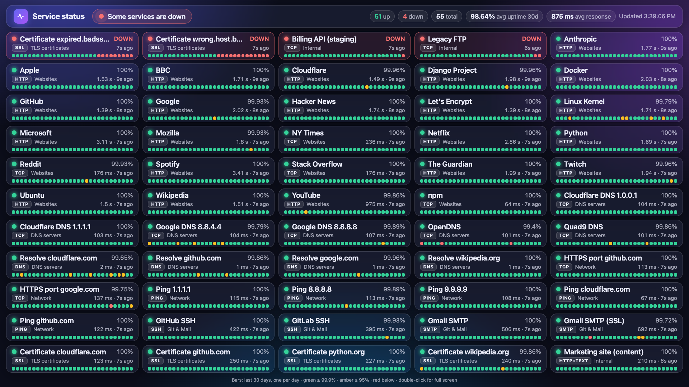
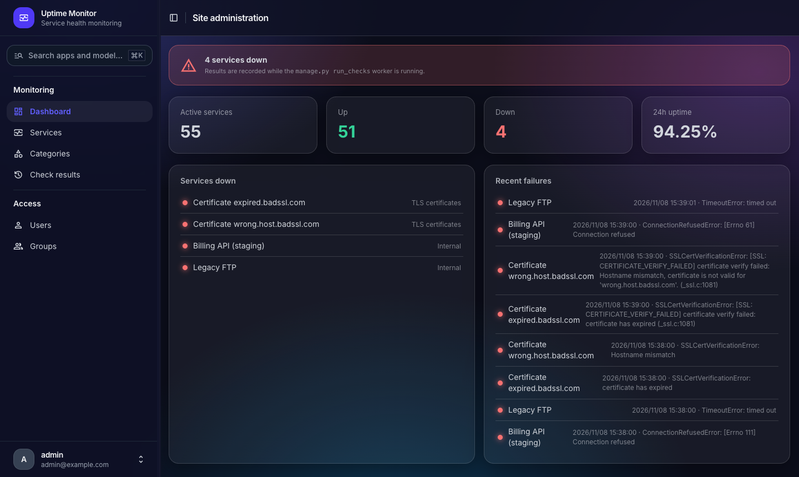
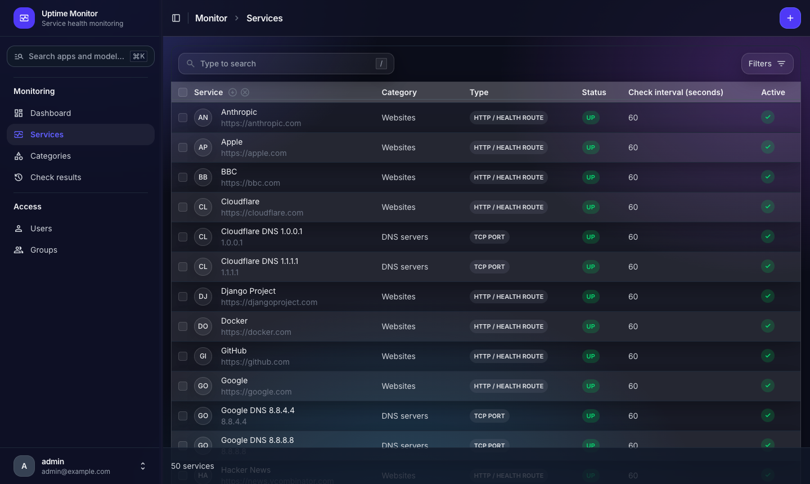
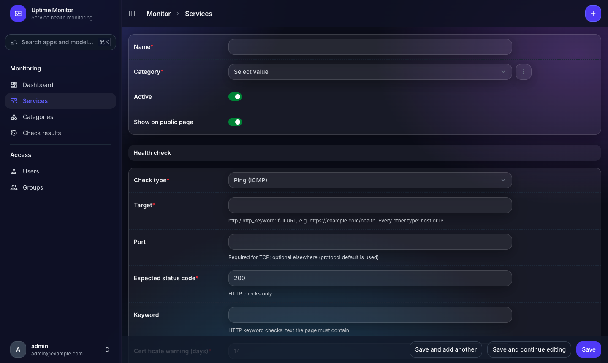

Define services in the admin, pick how each is health-checked, and a background worker records the results. A TV-friendly public page shows only what matters. No hosts, ports or error messages are ever exposed.

A static snapshot of the real status page, seeded with 30 days of realistic history. Four services are down on purpose.
Ping, TCP, HTTP status and keyword, DNS, SSL expiry, SSH, SMTP, Redis, PostgreSQL and MySQL.
A grid that scales so every service fits on a TV. Problems sort first, 30-day history bars, self-refreshing.
/api/status serves the same data, cached for 15 seconds, with nothing sensitive in it.
Unfold theme with a glass skin, live counters, recent failures, badges, search and filters.
Per-service interval and timeout, parallel checks, automatic pruning of old results.
Targets, ports and errors never leave the server. A per-service switch hides it from the public page.



git clone https://github.com/CtrlAltDevelop/uptime-monitor && cd uptime-monitor make up # build and start web + worker with Docker make docker-superuser # create your admin login make seed-realistic # optional: demo data with 30 days of history
Then open http://localhost:8000/ for the status page and /admin/ for the admin.
A production-like stack with PostgreSQL and automatic HTTPS is included: see the
README.